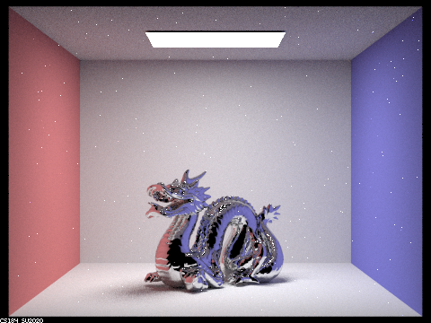
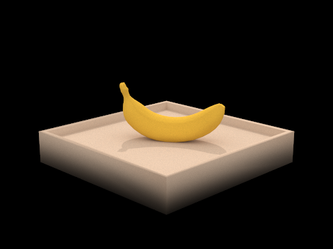
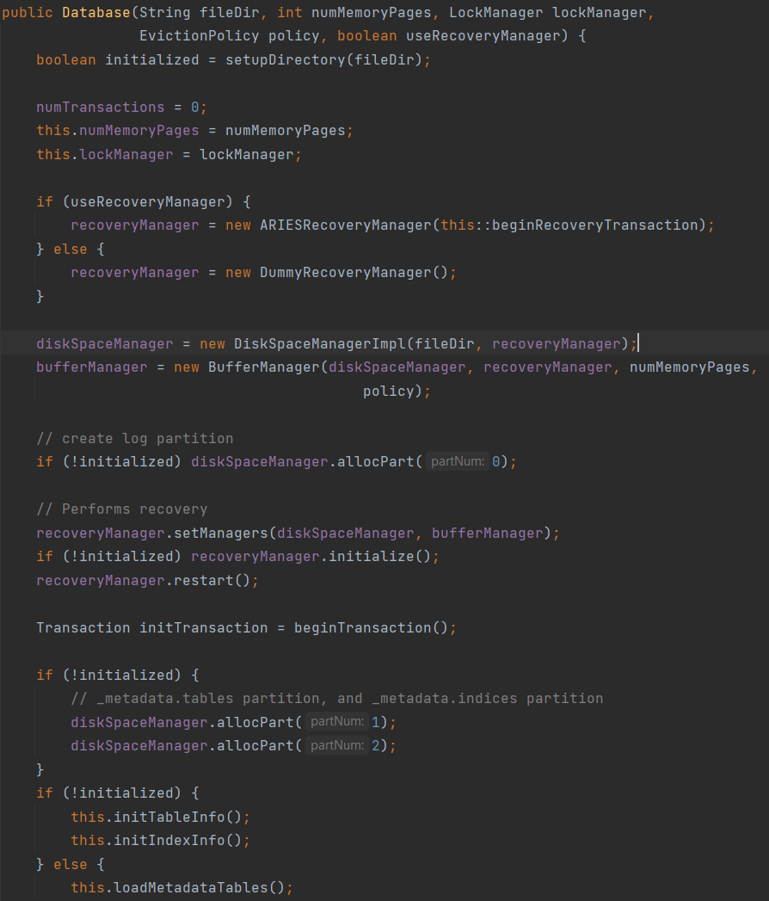
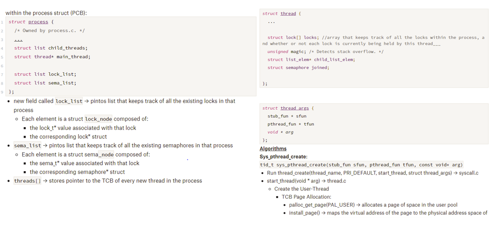
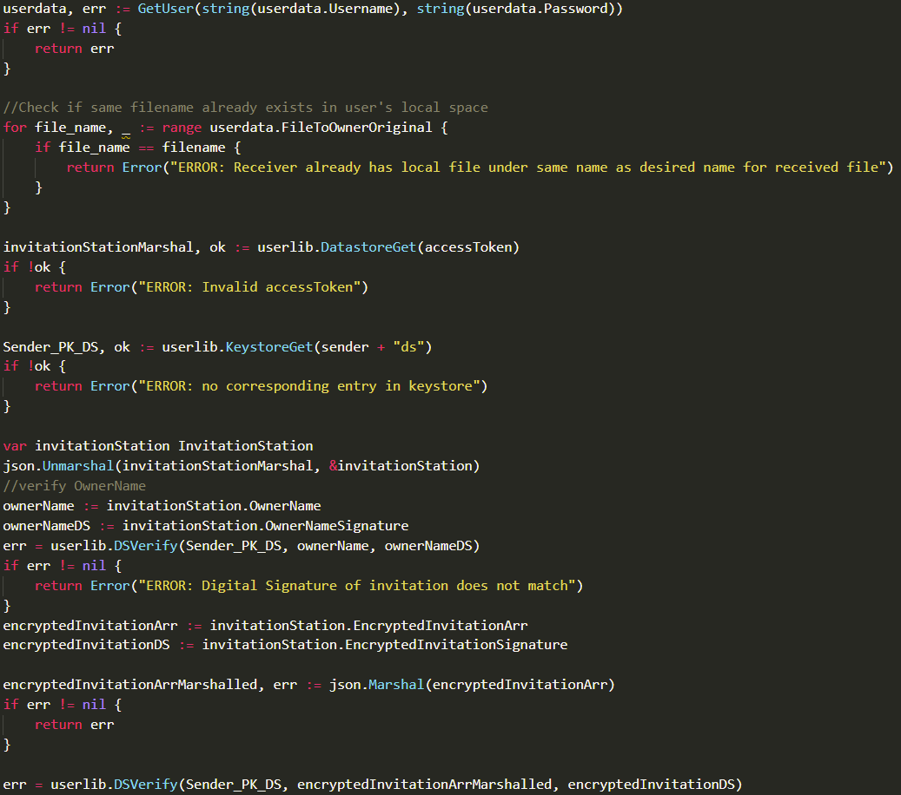
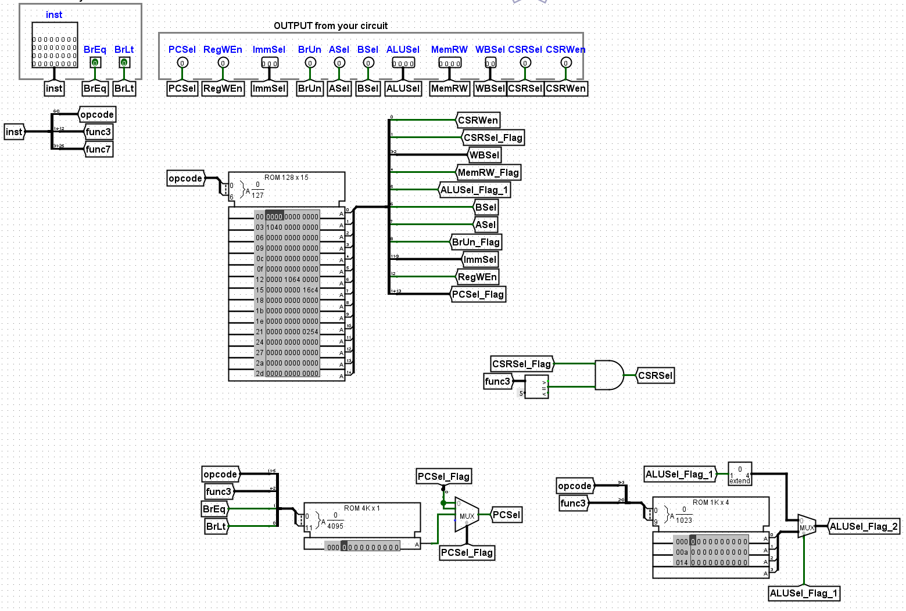
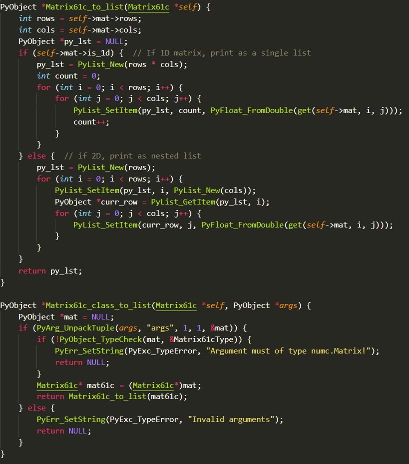
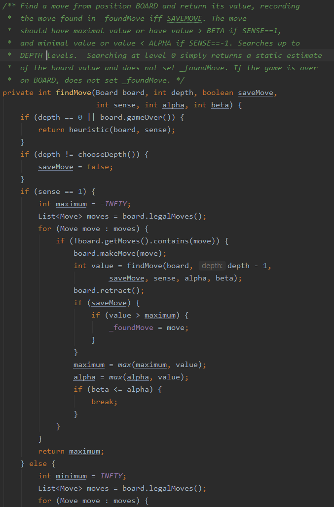

Implementing Graphics Renderers that explore various aspects of Graphics Processing


Implemented a rasterizer with antialiasing and texture mapping, mesh editor that builds Bezier surfaces and manipulates triangle meshes, physically-based rendererusing pathtracing to generate realistic images, and real-time simulation of cloth.
Implemented a rasterizer for images that converts shapes into real images. Also worked on improving the quality of these images using various techniques such as antialiasing by super sampling and forms of texture mapping
Create and evaluate Bezier curves, manipulate triangle meshes, and implement loop subdivision. Used Casteljau’s Algorithm in order to evaluate Bezier curves and also evaluated Bezier surfaces using a similar method. Additionally, created a mesh editor that has the capability of flipping and splitting edges. Utilized the half-edge data structure to implement many of the parts.
Implemented multiple aspects of the path tracing algorithm in order to render various scenes with lighting. Path tracing allows one to illuminate images with realistic lighting using ray intersection techniques. The algorithm determines how much of the illuminance from a light source will arrive at the viewpoint camera. Implemented triangle and sphere intersection algorithms which allowed one to figure out if and where a ray would form an intersection. Also constructed Bounding Volume Hierarchy (BVH) boxes to speed up the process of rendering images. A key part of this project is global illumination; accomplished this using direct and indirect lighting functions. Lastly, used adaptive sampling to reduce the noise in our rendered images.
Added additional features to the ray tracer such as rendering mirror and glass materials and microfacet material. Focused on implementing various types of materials as features
Implemented a simulation of cloth which includes a spring and mass system. Constructed a mass and spring system, explored how cloth collides with the ground or different objects in vertical and horizontal orientations. Also included various shading mechanisms such as Diffuse, Blinn-Phong, Texture Mapping, Bump and Displacement Map, and Mirror Shaders.
Tech:
C++
Date:
January 2022 - May 2022
Lightweight Database
Implementing a Lightweight Database (RookieDB)

Implemented B+ tree indices, joins, query optimization, multigranularity locking, and recovery for a database which supports executing simple transactions in series.
Tech:
Java
Date:
January 2022 - May 2022
PintOS
Implementing an Operating System

Implemented critical components of the PintOS operating system, including threading, support for user program execution and thread scheduling, and a file system.
I added a buffer cache for improved reading and writing performance, implemented the Unix FFS system to
allow extensible
files, and added full support for subdirectories.
Tech:
C
Date:
September 2021 - December 2021
End to End File Sharing System
Secure Encrypted File Sharing

Designed and implemented a secure file sharing system based on public storage, similar to dropbox, without breaching IND-CPA using cryptographic functions (one must fully support confidentiality and integrity). The public storage is an untrusted service hosted on a server and network controlled by an adversary who can view and record the
content and metadata of all requests. The file sharing systme also supports hierarchical sharing/revocation and efficient file append.
Cryptographic Functions Used: Public Key Encryption (PKE) · Digital Signatures · Hash Function · HMAC · Hash-based and Password-based Key Derivation Function · Symmetric Encryption · Random Byte Generator
Built a discord bot that allows users to simultaneously listen to the same music.
Users can queue any songs from YouTube or Spotify by inputting song titles, song URLs, or playlist URLs.
Implemented many commands to manipulate a dynamic song queue and display song information such as artist name, duration, current position in the song.
Lite version of the Git version control system with features like file persistence and restoration, branches, checkout, logs, and merging.
Used SHA-1 encoding and serialization to encode and store files for both local and remote repositories.
Tech:
Java
Date:
Spring 2020
CPU Datapath
Full Execution of Assembly Language Instructions

Built a basic RISC-V CPU datapath in Logisim to execute assembly language instructions.
Executes all datapath stages: instruction fetch, decode, execution, memory read/write, write back.
Designed instruction decode, arithmetic logic unit (ALU), register files, immediate and branch selection, control signals, and control status registers.
Tech:
Logisim, RISC-V
Date:
Fall 2020
NumC

Developed numc, a version of numpy (written in C) that performs various matrix operations such as slicing and exponentiation.
Implemented Python-C interface to translate Python instructions into C operations using the Python/C API (https://docs.python.org/3/c-api/index.html).
Utilized efficient cache blocking, SIMD instructions, and OpenMP for parallelization to speed up performance for matrix operations.
Tech:
Python, C, Python/C API, SIMD, OpenMP
Date:
Fall 2020
Lines of Action
Chess AI using Decision Trees

https://en.wikipedia.org/wiki/Lines_of_Action
Developed a fully functional LOA strategy game by manipulating board, piece, and square objects. Used decision game trees and pruning optimization to create AI that plays LOA at various difficulties.
Tech:
Java
Date:
Spring 2020
DATA 100 Course Staff
Principles & Techniques of Data Science
Hold office hours to teach and help students on assignments, and assist in lab sections.
Grade homeworks/exams, and answer student questions online via Piazza.
Some key principles I taught include languages for transforming, querying and analyzing data; algorithms for machine learning methods including regression,
classification and clustering; principles behind creating informative data visualizations; statistical concepts of
measurement error and prediction; and techniques for scalable data processing.
Topics: Question formulation, data collection and cleaning, visualization, statistical inference, predictive modeling, and decision making
Created alert notifications (cut tickets) for underperforming advertisers in NA, EU, and FE markets using advertising performance metrics.
Connected three different services to create a cohesive ticketing system that informs advertisers of suspended status and provides resources to improve metrics.
Tech: Java • AWS • Apollo • Brazil • Amazon Pipelines • Amazon-specific Ticketing APIs • Other Amazon-specific packages and builds
Date: May 2021 - August 2021
New Jersey Governor's School of Engineering and Technology
Summer Research Program for Top 70 Students in New Jersey
Developed an energy-efficient and cost-efficient "Internet of Things" (IoT) smart-home and user-interactive GUI.
Presented and published research—"Automated Sensor Technology for the Operation of Smart Homes"—at the 2018 MIT IEEE Undergraduate Research Conference.
On Lancer Robotics (FTC Team #3415), I won the Think Award (2nd-highest ranked award) at the 2017 World Championships in St. Louis.
As head programmer, I coded the robot in Java using Android Studio, programmed mecanum wheels and applied perspective drive, implemented smooth movement via encoders, color, & gyro sensors and motion profiling algorithms, and utilized Vuforia computer vision to track objects and calculate field orientation.
Eta Kappa Nu (HKN) is the national EECS honor society. The Mu Chapter of HKN is one of the most active student groups on the UC Berkeley campus, offering a variety of services to the Berkeley EECS community.
Industrial/Student Relations Officier: Organize and host company info sessions and manage the startup fair and resume books.
Service Officer: Organize community service events to give back to the STEM community. (EX: Berkeley EECS Day, Senior Citizens Tutoring)
Developed music slow-down/looping app for AFX Dance (hip hop/open choreography group for dancers at UC Berkeley).
Developing AFX Dance's official website (afx.dance) in Typescript and React.
As Head Web Developer, I plan and develop new features that improve the website, including: Navbar redesign, updating the People page, adding event advertising to Events page, creating a new Merchandise page.
Tech: React • Typescript • React Native • Android Studio
Constructed graph neural networks to classify and reconstruct high energy particle events from the Large Hadron Collider at the Lawrence Berkeley National Laboratory.
Took introductory particle physics lectures to better understand high energy collisions (examples include the Higgs Boson, Feynman Diagrams, The Strong Force, Particle measurement and detection, Statistical methods, Machine Learning for Parameter Estimation)
Natural Language Processing & Machine Learning Research @ UTHealth
"What does the public say about electronic cigarettes? Use of machine learning algorithms to mine social media discussions."
"Harnessing Deep Learning to Understand Public Perceptions of the Harm of Vaping Using Social Media"—Clean and pre-process tweets from Twitter, design rule-based filtering algorithm, build dataset, utilize machine learning algorithms for further filtering, use topic modeling to identify major discussion topics and trends, write research paper (first author).
As math team captain, I ran math team tryouts and held weekly practices to prepare for competitions.
AIME Qualifier.
Princeton University Math Competition (PUMaC): 2nd place Live Round, 5th place Overall Team (2017). 5th place Team Round, Power Round, Overall Team (2018)
Harvard-MIT Mathematics Tournament (HMMT): 19/150th place - Guts Round (2018)
Date: September 2017 - May 2019
Google Software Engineering Internship
Google Cloud: Power Health Team
Created data pipelines that extract and transform battery temperature data using MapReduce frameworks, stored them in databases, and queried databases to build various dashboards. These dashboards introduced battery temperature data as a crucial factor for identifying and predicting misperforming batteries and their corresponding lifetimes for preventative maintenance, which ultimately translates to saving datacenters millions of dollars in maintenance costs.
The dashboards are the following:
"Real-Time Battery Temperature Quantiles:" Per-cluster and updated hourly. Plots hourly quantile data for each cluster. Users can also compare specific percentiles' hourly variations over time between different clusters.
"Battery Temperature Distributions:" Per-battery and updated weekly. Plots the temperature distributions of batteries over its entire service lifetime (whenever a battery was used). Users can also compare different vendors by grouping by battery model numbers and comparing distributions.
"Historical Battery Trends:" Per-rack and updated daily. Plots average/min/max daily temperatures of batteries within a rack. Users can also group by metadata like Location, TLA, and Shelf Type, and compare different temperature distributions via grouping by corresponding metadata. Users can also view detailed location and TLA mappings.
Tech: C++ • SQL • Protos • MapReduce Frameworks • Dashboard Creation • Data Pipelines • Blaze • Fig • Various Google Internal Tools